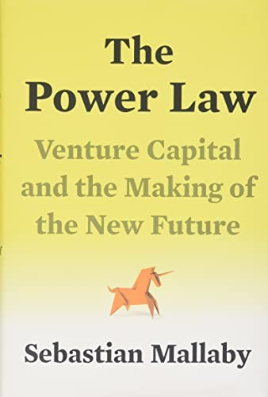

塞巴斯蒂安·马拉比（Sebastian Mallaby）是美国对外关系委员会的高级研究员，曾任《华盛顿邮报》记者和《经济学人》编辑，著有《比神更有钱》（More Money Than God，对冲基金史）和《了解一切的人》（The Man Who Knew，格林斯潘传记）。凭借在国际金融领域深厚的人脉积累，他获得了风险投资界前所未有的采访授权，走访了红杉资本、凯鹏华盈、Accel、Benchmark、Andreessen Horowitz等顶级机构的核心人物，以及启明创投、今日资本等中国知名风险投资公司。《风险投资史》于2022年出版，是迄今对风险投资行业最为全面、最具深度的历史性梳理。
本书书名所指的"幂律"（power law），是风险投资行业运作逻辑的核心数学结构。在一个典型的风险投资组合中，绝大多数投资以失败告终，但极少数的成功案例——谷歌、脸书、英伟达——能够产生如此巨大的回报，以至于一笔成功的投资足以覆盖数十笔失败所带来的损失。这种极度不均匀的收益分布，从根本上决定了风险投资者的行为逻辑：不应追求"大多数投资不亏损"，而应寻找少数可能产生百倍乃至千倍回报的极端机遇。马拉比通过这一简洁的数学概念，解释了为何风险投资者倾向于支持"听起来疯狂"的大胆赌注。
书中的叙事横跨半个多世纪，从1950年代仙童半导体的早期天使投资讲起，经过英特尔、苹果、网景的崛起，一路延伸至优步、Airbnb的故事，以及中国互联网经济的爆炸式成长。马拉比以深度报道的笔法还原了许多鲜为人知的幕后细节——红杉资本的唐·瓦伦坦如何发现了苹果，约翰·杜尔在谷歌投资中所起的关键作用，以及WeWork泡沫破灭背后软银与孙正义的决策错误。书中对风险投资界长期存在的多元化不足问题也有坦诚的呈现。
《经济学人》将本书列为2022年度最佳图书之一；《华盛顿邮报》的贝瑟尼·麦克莱恩（Bethany McLean）称其为"任何试图理解当代硅谷的人的必读之作"（"A must-read for anyone seeking to understand modern-day Silicon Valley"）。查尔斯·杜希格（Charles Duhigg）则将本书誉为"一部经典……在报道、分析与叙事方面都达到了卓越水准"（"A classic...A book of exceptional reporting, analysis and storytelling."）。对于关注科技行业演化史、风险资本运作机制，以及创新与财富创造内在逻辑的读者，《风险投资史》是近年商业非虚构写作中难得一见的兼具信息量与叙事吸引力的大作。